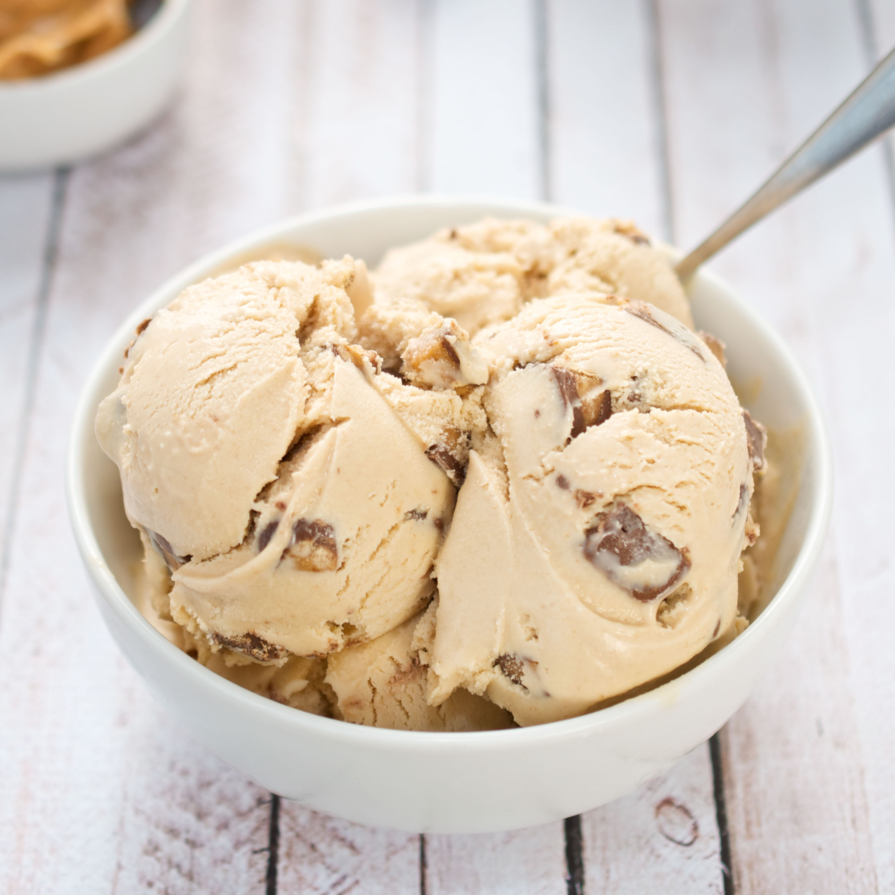

How to Create Peanut Butter Cup Ice Cream
This recipe will show you how to make a creamy and nutty peanut butter cup ice cream
Preliminary Information and Warnings
How to start the Ice Cream Machine
How to Clean the Machine
And if machine is not working properly, refer to:Troubleshooting
Special warning for this recipe only: Contains nuts
Required Ingredients/Tools:
- 1¹∕³ cups peanut butter
- ¾ cup granulated sugar
- 1²∕³ cups milk
- 2¼ cups heavy cream
- 1½ teaspoons pure vanilla extract
- 1¼ cups chopped peanut butter cups
- Medium mixing bowl
- Ice Cream Machine (includes measuring cup)
Makes about 8 cups, richer and higher quality peanut butter will make better ice cream
- Start and prepare the ice cream machine
- Put 1¹∕³ of peanut butter and ¾ cup of sugar into bowl
- Mix with hand mixer until peanut butter and sugar is smooth
- Add the 1²∕³ milk
- Stir in the 2¼ cups of heavy cream and 1½ teaspoons of vanilla extract
- Cover and refrigerate 1 to 2 hours
- Take out bowl and set it near you
- Press the ice cream button on the ice cream maker’s control panel
- Press the start button on the machine and the arm will stir
- Pour the mixture from the bowl into the ingredients spout
- Cover the spout with a measuring cup
- Wait 30-35 minutes for thickness
- Add chopped candy through ingredients spout 5 minutes before completion
- Wait for the machine to finish mixing the candy and the ice cream
- Wait 15 minutes for ice cream to settle
- Scoop out of freezer bowl and enjoy
Figure: Peanut Butter Cup Icecream
